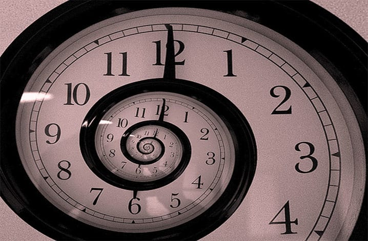
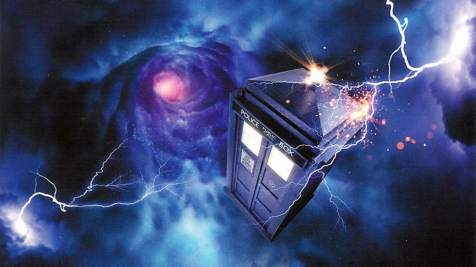
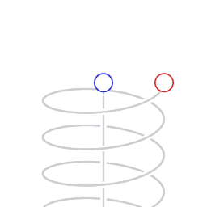

Paradoxo Temporal
Se alguém voltasse ao passado e impedisse o próprio nascimento, como essa pessoa teria viajado no tempo? Esse é um dos paradoxos mais famosos da física.
Ler MaisO tempo sempre foi um dos maiores mistérios da humanidade. Cientistas, filósofos e físicos tentam entender sua natureza, suas distorções e as possibilidades que ele pode esconder. Nesta seção, exploramos teorias capazes de desafiar nossa percepção da realidade.

Se alguém voltasse ao passado e impedisse o próprio nascimento, como essa pessoa teria viajado no tempo? Esse é um dos paradoxos mais famosos da física.
Ler Mais
A ideia de viajar entre passado e futuro intriga cientistas há décadas. Algumas teorias sugerem que distorções extremas do espaço-tempo poderiam tornar isso possível.
Ler Mais
Segundo a relatividade de Einstein, o tempo pode passar mais devagar dependendo da velocidade ou da força gravitacional exercida sobre um objeto.
Ler MaisUma teoria popular na ficção científica onde determinados eventos se repetem infinitamente, aprisionando indivíduos no mesmo ciclo temporal.
Ler MaisAlgumas teorias cosmológicas sugerem que o tempo pode não ser infinito. O universo talvez caminhe lentamente para um estado onde nada mais aconteça.
Ler MaisAstronautas na Estação Espacial Internacional envelhecem ligeiramente mais devagar do que pessoas na Terra devido aos efeitos da dilatação temporal previstos pela relatividade.